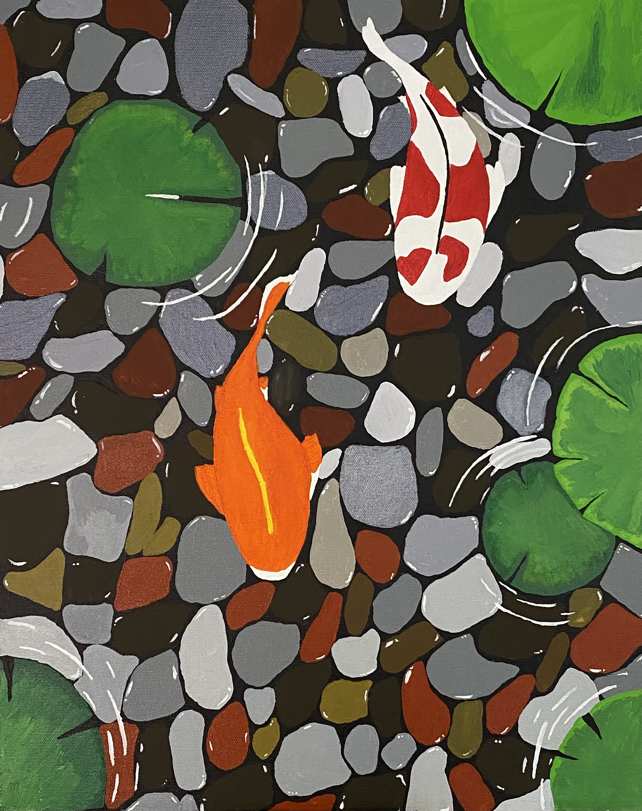

Tessa's Art Portfolio
Hello, welcome to my art page!About the artist
My name is Tessa Easterling, I am a second year Art Practice major at Saint Mary's College of California. I have always had a passion for creating ever since I was a little girl. Creating always puts me back in my happy place, no matter what I am making. I am from Sacramento, California and I love my two dogs, Coco and Pearl. I have played six sports throughout my life so far and my favorite ones are tennis and lacrosse. I love traveling and just exploring new places, my favorite adventure is probably going to Greece last summer.
My art pieces
Fire Pants

An acrylic painting on jeans of flames burning through the pants to show the bones underneath. There was no objective to this painting, except that I wanted to create a fun pair of Halloween jeans to wear to spirit day. I was inspired by Pinterest by combining flames from one painting and bones from another.
Leaf Colored Pencil
A colored pencil close up drawing of a leaf with dew drops on it. The objective of this piece for my class was to create a gridded colored pencil drawing using less than seven colors. This piece was inspired by a picture of spring flowers in my front yard, where I focused on the wet leaf aspect. This 16”x20” colored pencil drawing was hung up in the school display case for our freshman class.
Koi Still Life
An acrylic painting of two koi fish swimming in a pond. The objective of this piece for my class was to create a work that displayed beauty. This piece was inspired by a picture I took on my vacation to Maui. This painting was displayed in my school’s art show during a virtual show due to Covid.
Astronaut's Dream
An acrylic painting of an astronaut hanging onto planets which make them look like balloons. The objective of this piece for my class was to create a work that displayed childhood imagination. This painting was inspired by my little cousin who loved balloons and wished to be an astronaut.
Painting The Moon
An acrylic painting of a kid painting on the moon. I was inspired by the Dreamworks introduction of the boy fishing on the moon. I made it for my little cousin to put in his room.
Designs for Flyers

A digital art piece on Procreate of a woman dressed up in the American flag, being spotlighted walking down a red carpet stairs. The object to this piece was to capture wealth, patriotic and being the center of attention. This was the winning poster to the fall 2021 musical for my school.
A digital piece on Procreate of two women bashing a man into a cake. The objective was to create a comedic flier set in the 70’s, to capture the essence of the plot to Merry Wives of Windsor. This is the winning poster for the spring 2022 play of Merry Wives of Windsor.
3D Models
Donut
Forest House